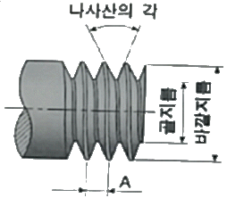
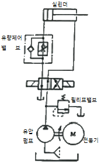
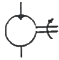

설비보전기능사 (2016-04-02 기출문제)
1과목: 기계보전 일반(대략구분)
1. 유압펌프 운전시, 작동유의 온도가 몇 ℃ 정도에 도달될 때까지 무부하 운전하는 것이 좋은가?
- 0℃
- 10℃
- 40℃
- 80℃
(정답률: 84%)

2. 송풍기(blower)의 주요 구성부분이 아닌 것은?
- 케이싱
- 체인
- 임펠러
- 커플링
(정답률: 79%)
3. 다음 중 구부러진 축을 수리할 때 사용되는 공구는?
- 짐크로(jim crow)
- 파이프 렌치(pipe wrench)
- 베어링 풀러(bearing puller)
- 스톱 링 플라이어(stop ring plier)
(정답률: 87%)
4. 유성기어 감속기에 관한 설명으로 옳지 않은 것은?
- 큰 감속비를 얻을 수 있다.
- 감속기 기어의 잇수 차이가 있다.
- 입형은 펌프를 이용하여 윤활한다.
- 1kW 이하의 소형은 유욕 윤활을 한다.
(정답률: 76%)
5. 도면에서 2종류 이상의 선이 같은 장소에서 겹치게될 경우 가장 우선시 되는 선은?
- 치수보조선
- 절단선
- 외형선
- 숨은선
(정답률: 85%)
6. 특수한 가공을 하는 부분의 특수 지정선으로 사용되는 선은?
- 가는 일점쇄선
- 굵은 일점쇄선
- 굵은 실선
- 가는 실선
(정답률: 68%)
7. 글루브 밸브에 관한 설명으로 틀린 것은?
- 개폐가 빠르다.
- 압력강하가 적다.
- 구조가 간단하다.
- 유체 저항이 크다.
(정답률: 61%)
8. 오링(o-ring)을 정적실(Static Seal)로 사용할 경우 장점이 아닌 것은?
- 마찰이 적다.
- 저압이 좋다.
- 설치 공간이 작다.
- 실(Seal) 효과가 크다.
(정답률: 57%)
9. 다음 중 나사의 표시법을 통하여 알 수 없는 것은?
- 나사의 감긴 방향
- 나사산의 줄수
- 나사의 종류
- 나사의 길이
(정답률: 66%)
10. 전동기 기동불능의 원인으로 거리가 먼 것은?
- 배선의 단선
- 전기기기의 고장
- 기계적 과부하
- 베어링 마모
(정답률: 67%)
11. 다음 나사의 그림에서 [A]는 무엇을 나타내는가?

- 리드(lead)
- 피치(pitch)
- 호칭지름
- 모듈(module)
(정답률: 81%)
12. 다음 중 회전력의 전달과 동시에 보스를 축 방향으로 이동시킬 수 있는 것은?
- 접선 키
- 반달 키
- 새들 키
- 미끄럼 키
(정답률: 66%)
13. 배관지지 장치의 역할이 아닌 것은?
- 관의 중량을 지지한다.
- 관의 수축, 팽창을 흡수한다.
- 외력에 의한 배관이동을 제한한다.
- 배관의 누설을 방지한다.
(정답률: 73%)
14. 윤활유와 비교할 때 그리스 윤활의 장점으로 틀린 것은?
- 누설이 적다.
- 급유간격이 길다.
- 냉각작용이 우수하다.
- 밀봉성이 좋고 먼지 등의 침입이 적다.
(정답률: 64%)
15. 관속을 흐르는 유체의 종류를 표시하는 경우에는 문자나 기호로서 표시한다. 유체종류와 문자기호가 올바르게 표시된 것은?
- 공기 – A
- 가스 - S
- 증기 - W
- 기름 - G
(정답률: 81%)
16. 원심적 압축기와 비교한 왕복식 압축기의 장점에 해당하는 것은?
- 고압 발생이 가능하다.
- 맥동 압력이 없다.
- 대용량이다.
- 윤활이 쉽다.
(정답률: 66%)
17. 다음 중 석유계 윤활유가 아닌 것은?
- 파라핀기 윤활유
- 나프텐기 윤활유
- 혼합 윤활유
- 합성 윤활유
(정답률: 55%)
18. 다음 중 미끄럼을 방지하기 위하여 안쪽 표면에 이가 있는벨트로 정확한 속도가 요구되는 경우에 사용되는 것은?
- 천 벨트
- 가죽 벨트
- 고무 벨트
- 타이밍 벨트
(정답률: 79%)
19. 곧은자를 제품에 대고 실제 길이를 알아내는 측정법으로옳은 것은?
- 비교측정
- 직접측정
- 한계측정
- 간접측정
(정답률: 85%)
20. 재해의 직접원인이 아닌 것은?
- 물체 자체의 결함
- 안전방호 장치의 결함
- 불충분한 경보 시스템
- 안전 지식의 부족
(정답률: 68%)
2과목: 설비관리(대략구분)
21. 설비 및 구조물의 고유진동수와 외부환경조건에 의한 강제진동수가 일치할 경우 설비 및 구조물에 진폭이 크게 발생하면서 소음이 발생한다. 이러한 현상을 무엇이라 하는가?
- 언밸런스(Unbalance)
- 기계적 풀림(Looseness)
- 미스얼라인먼트(Misalignment)
- 공진(Resonance)
(정답률: 75%)
22. 물체를 올릴 때는 제동 작용을 하지 않고 클러치 작용을하며, 물체를 아래로 내릴 때는 속도를 조절하거나 정지시킬 때 사용되는 브레이크는?
- 블록 브레이크
- 밴드 브레이크
- 자동하중 브레이크
- 래칫 휠(rachet whee)
(정답률: 68%)
23. 윤활급유법 중 순환급유법이 아닌 것은?
- 비말 급유법
- 유욕 급유법
- 적하 급유법
- 원심 급유법
(정답률: 66%)
24. 기계제도에서 단면의 해칭법에 대한 설명으로 틀린 것은?
- 기본중심선에 대하여 대략 45°의 가는 실선으로 일정한간격으로 그린다.
- 서로 인접한 다른 단면의 해칭은 선의 방향 또는 각도를바꾸거나 해칭선의 간격을 바꾸어 구별한다.
- 필요에 따라 해칭하지 않고 채색을 할 수 있으며 이것을스머징(Smudging)이라 한다.
- 해칭한 곳에 치수를 기입할 때는 해칭을 중단하지 않고치수를 기입해야 한다.
(정답률: 68%)
25. 계측 장치의 설명 중에서 틀린 것은?
- 원격 측정식은 대부분 자동 측정형이다.
- 직접 측정식은 지시형, 가반형(Portable)이 많다.
- 관리 작업용은 정밀도가 높으며, 정수(Digital)형이 사용된다.
- 장치 공업용은 정치식, 자동지시식, 기록식이 많이 사용된다.
(정답률: 53%)
26. 다음 중 설비의 효율화를 저해하는 로스가 아닌 것은?
- 속도 로스
- 고장 로스
- 가동 로스
- 일시 정체 로스
(정답률: 55%)
27. TPM의 목표와 가장 잘 부합되는 것은?
- 사람의 체질개선
- 자재의 체질개선
- 품질의 체질개선
- 설비의 체질개선
(정답률: 71%)
28. 설비관리의 목표를 설명한 것 중 옳은 것은?
- 기업의 생산성 향상
- 설비 투자비용 극대화
- 설비의 수리비용 확대
- 기업의 설비관리 인력 증원
(정답률: 76%)
29. 시공구의 보전단계에 해당되는 것은?
- 공구의 검사
- 공구의 표준화
- 공구의 연구 시험
- 공구의 소요량 계획
(정답률: 56%)
30. 불량품, 결점, 사고 건수 등을 그 현상이나 원인 별로 데이터를 내고 수량이 많은 순서대로 나열하여 막대그래프로 표시하는 것은?
- 관리도
- 파레토도
- 특성 요인도
- 히스토그램
(정답률: 54%)
3과목: 공유압 일반(대략구분)
31. 공사의 완급도에 따른 구분의 설명이 잘못된 것은?
- 준급공사 – 당월에 착수하는 공사
- 긴급공사 – 즉시 착수해야 할 공사
- 예비공사 – 한가할 때 착수하는 공사
- 계획공사 – 일정 계획을 수립하여 통제하는 공사
(정답률: 58%)
32. 자주보전의 역할분담 중 일상보전의 활동에 속하지 않는 것은?
- 청소
- 급유
- 조정
- 진단
(정답률: 52%)
33. 공사 관리에서 일부 설비가 고장 나는 경우에 일련의 설비를 일제히 정지시켜, 함께 보전을 행하는 방법은?
- 휴지공사
- 개별공사
- 설비공사
- 예지공사
(정답률: 67%)
34. 설비열화의 대책에 해당하지 않는 것은?
- 열화 방지
- 열화 회복
- 열화 방치
- 열화 검사
(정답률: 76%)
35. 설비보전의 목적에 해당되지 않은 것은?
- 품질 향상
- 원가 절감
- 외주 이용
- 생산량 증대
(정답률: 74%)
36. 설비의 라이프 사이클(Life Cycle)과 시스템 방법을 연결하였다. 잘못 연결한 것은?
- 시스템 관리 – 운용 유지
- 시스템 연구 – 시스템 효율성
- 시스템 공학 – 시스템의 설계 개발
- 시스템 해석 – 시스템의 개념 구성과 규격 결정
(정답률: 44%)
37. 교체방식으로 일정기간이 되면 모든 부품을 신품과 교체하는 방식은?
- 각개 교체
- 최적 교체
- 일제 교체
- 개별 사전 교체
(정답률: 75%)
38. 만성 로스의 대책이 아닌 것은?
- 현상 해석 철저
- 미소 결함 무시
- 결함을 표면으로 도출
- 관리해야 할 요인계 철저히 검토
(정답률: 77%)
39. 다음의 설명 내용 중 틀린 것은?
- 생산성 = 산출/투입
- 1 = 신뢰도 + 불신뢰도
- 고장율 = 고장수/동작시간의 합
- 제품단위당 보전비 = 산출/보전비
(정답률: 45%)
40. 방향제어 밸브에 해당하는 것은?
- 분류 밸브
- 체크 밸브
- 시퀀스 밸브
- 카운터 밸런스 밸브
(정답률: 67%)
41. 공압의 특징에 대한 설명으로 틀린 것은?
- 배기소음이 발생한다.
- 위치 제어가 용이하다.
- 에너지 축적이 용이하다.
- 과부하가 되어도 안전하다.
(정답률: 44%)
42. 그림과 같은 유압회로에 대한 설명으로 틀린 것은?

- 릴리프 밸브의 가동율이 높다.
- 미터인 방식의 속도제어 회로이다.
- 압력에너지의 손실과 유온 상승이 많다.
- 부하의 크기에 따라 펌프 토출압력이 변화한다.
(정답률: 43%)
43. 그림의 기호와 같은 일정용량형 유압모터의 흐름 형태는?

- 한방향 흐름
- 두방향 흐름
- 하부방향 흐름
- 우방향 흐름
(정답률: 67%)
44. 다음 중 용도가 서로 다른 밸브는?
- 릴리프 밸브
- 시퀀스 밸브
- 교축 밸브
- 언 로드 밸브
(정답률: 60%)
45. 다음 중 온도 변화에 따른 점도변화가 가장 적은 점도지수는?
- 1
- 32
- 46
- 90
(정답률: 55%)
46. 다음 중 밸브의 작업 포트를 표현하는 기호는?
- A
- P
- Z
- R
(정답률: 50%)
47. 전·후진 시 같은 속도와 힘으로 일을 할 수 있는 공압실린더는?
- 텐덤실린더
- 스크루식
- 다위치제어실린더
- 양로드형실린더
(정답률: 65%)
48. 다음 중 유압장치의 구성요소가 아닌 것은?
- 공기(air)
- 동력원(power unit)
- 제어부(control part)
- 액추에이터(actuator)
(정답률: 71%)
49. 다음 중 왕복동식 공기 압축기는?
- 베인식
- 스크루식
- 피스톤식
- 루트 블로어
(정답률: 70%)
50. 다음 중 파스칼의 원리를 이용하지 않은 것은?
- 수압기
- 유압 장치
- 공기 압축기
- 내부확장식 제동장치
(정답률: 39%)
4과목: 산업안전(대략구분)
51. 어큐뮬레이터(축압기)의 사용 목적이 아닌 것은?
- 에너지의 축적
- 유체의 맥동 감쇠
- 충격 압력의 흡수
- 유체의 누설 방지
(정답률: 57%)
52. 관속을 흐르는 유체에서 “A1V1 = A2V2 = 일정”하다는 유체 운동의 이론은? (단, A1, A2는 단면적, V1, V2는 유체속도이다.)
- 파스칼의 원리
- 연속의 법칙
- 베르누이의 정리
- 오일러 방정식
(정답률: 52%)
53. 로드리스(rodless)실린더에 대한 설명으로 틀린 것은?
- 피스톤 로드가 없다.
- 비교적 행정이 짧다.
- 설치공간을 줄일 수 있다.
- 임의의 위치에 정지시킬 수 있다.
(정답률: 47%)
54. 산업안전보건법의 목적에 관한 내용으로 적합하지 않은 것은?
- 산업재해를 예방
- 쾌적한 작업환경을 조성
- 산업안전·보건에 관한 기준을 확립
- 재해발생 시 책임을 물어 형사처벌
(정답률: 76%)
55. 산업용 로봇을 이용하여 작업 시 안전 조치 사항으로 맞지 않는 것은?
- 로봇의 사용 조건에 따라 위험 영역을 명확히 하고, 안전 방호 울타리를 설치한다.
- 로봇이 자동의 상태로 운전 또는 대기하는 동안은그 상태에 있음을 주위에 명시한다.
- 위험 영역 안에 작업자가 있더라도 자동의 상태로 로봇을 가동한다.
- 높이가 2m 이상인 곳에서 로봇의 설정, 조정, 보전 등의 작업이 필요한 경우에는 플랫폼을 설치한다.
(정답률: 75%)
56. 안전에 대한 관심과 이해가 인식되고 유지됨으로써 얻을 수 있는 이점은?
- 기업의 이직률 감소
- 기업의 투자경비 증대
- 기업의 대외 신용도 저하
- 이기적인 직장 분위기 조성
(정답률: 66%)
57. 해머 사용 시의 유의해야할 사항으로 틀린 것은?
- 자루가 미끄러우면 장갑을 낀다.
- 쐐기를 박아서 자루가 단단한 것을 사용한다.
- 녹슨 것을 해머질 할 때에는 보호안경을 사용한다.
- 작업 전에 정비상태의 이상 유무를 점검한 후 사용한다.
(정답률: 65%)
58. 다음 중 추락방지대책이 아닌 것은?
- 악천후 시 작업 금지
- 작업 발판 등의 설치
- 개구부 등의 방호조치
- 지붕 위에서 작업 시 사다리 계단폭 10cm~20cm의 발판 설치
(정답률: 69%)
59. 다음 중 가연성 가스가 아닌 것은?
- 산소
- 수소
- 프로판
- 아세틸렌
(정답률: 67%)
60. 화학물질 취급 장소에서의 유해·위험을 경고하기 위해 사용하는 안전·보건표지의 색채로 맞는 것은?
- 녹색
- 흰색
- 빨간색
- 파란색
(정답률: 76%)